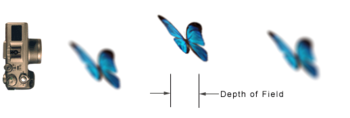

Depth of Field
- 在光學中，尤其是錄影或是攝影，是一個描述在空間中，可以清楚成像的距離範圍。
- 雖然透鏡只能夠將光聚到某一固定的距離，遠離此點則會逐漸模糊，但是在某一段特定的距離內，圖像模糊的程度是肉眼無法察覺的，這段距離稱之為景深。
- 景深通常由物距、以及鏡頭的 focal length焦距、aperture光圈和circle of confusion size所決定（相對於焦距的光圈大小）。

超焦距 (Hyperfocal distance)
- 當遠景深被擴大到無窮遠時，從焦點到鏡頭中心的距離即是超焦距
- 通過將相機對焦在超焦距上可以獲得給定f值下的最大景深。讓對焦距離超過超焦距並不會使遠景深增加（因為它已經被擴展到了無窮遠）
- 超焦距為H可由下式描述
$$ H = f + \frac{f^2}{N * c}$$
- H : 超焦距
- f : 焦距 focal length
- N : 光圈大小
- c : Circle of Confusion的直徑
光圈和DoF的關係
從下圖可以發現一些事情
- 加入光圈大小，會直接影響模糊圈大小
- 物體與鏡頭距離，會直接影響模糊圈大小
Circle of Confusion
點光源經過鏡頭在焦平面成的像是一個點，保持鏡頭與底片距離不變，沿光軸方向前後移動點光源，像平面上成的像就會成為有一定直徑的圓形，圓形的大小取決於光圈大小和點光源偏離程度，只要這個圓形像的直徑足夠小，相片看去仍然夠清晰，點光源圓形像再大些，相片會顯得模糊，這個臨界點光源圓形像，就叫模糊圈。
CoC公式其實可以從超焦距公式推導出來 $$ c = \frac{f^2}{N * ( H - f ) }$$
Reference
- Cambridge in Colour : TUTORIALS: DEPTH OF FIELD
- Depth of Field Wiki
- 攝影知識-景深概念及計算
- Jonathan Hsieh,模糊圓(Circle of confusion,CoC)與景深(DoF)
- 景深公式完全解析